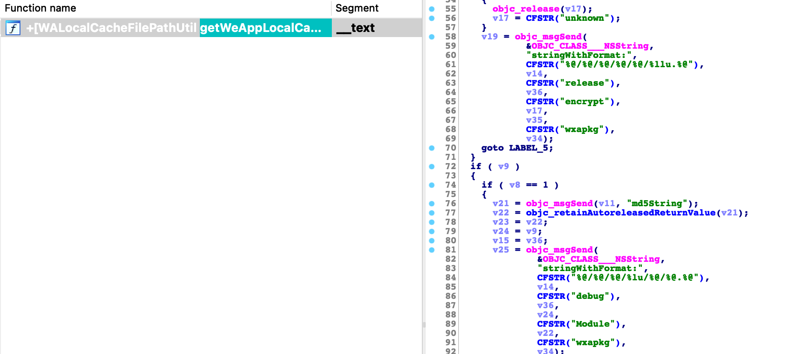

以前分析微信小程序，都是通过移动端获取wxapkg之后，使用解包工具解包的， 现在pc/mac都已经支持小程序了，所以移动端的操作就多少有些麻烦了。网上找了一圈，我发现pc的包跟移动端的包不太一样，根据pc_wxapkg_decrypt 可以知道，在pc端，文件是被加密了，并且现在新版本可能就不支持了。而我使用的mac端，目前并没有解密工具，所以我只能自己想办法解密了。
打开微信的包， 可以发现微信有两个程序，一个是WeChat, 一个是小程序，既然我们要分析的是小程序，那就只要把小程序拖进IDA就行了。
因为涉及到文件加解密，所以必然会有打开文件的操作，也就是说，如果我监控了 fopen之类的函数，我就可以通过调用栈找到加解密的函数。这个是我的最初想法，不过我并没有这么做。
后来我研究了一下加密的小程序包的格式，发现这个文件的后半部分其实是明文，且这个数据都能跟公开的结构体对上，而差别主要在于前1024个字节，很明显，被加密的数据只有 1024个字节，并且根据公开的信息，文件的第一个字节是 0xbe，这是两个关键的数字。
小程序的主要逻辑并没有看到明显的加固逻辑，所以直接静态分析是一个比较快的方法。 我想到的点是，小程序包的路径名中包含了 Module字样， 所以我直接搜索了字符串，最后发现还真有一个字符串。

接着就是对这个函数进行交叉引用，
这里就发现有一个pkgDecrypt:, 参数是小程序包的路径。
从图上可以看到，这是一个解密逻辑，代码里有1024大小，刚好符合我们的预期。它使用 AES_ECB 模式进行解密，但它的key来源未知， 不过，我们也不一定要 care 这个key的来源。
到这里，其实解密的方法已经有2个了。 首先第一个是通过hook
提取key，自己写代码进行解密。第二个则是直接调用这个pkgDecrypt方法解密。
然后就是 key 的生成问题了。从pkgDecrypt函数一直往上找，会发现key 并不是在小程序里生成的，而是通过IPC通信，从微信主程序传递到小程序的。
没有具体分析过这个数据格式，但可以确定分析的逻辑没问题， 剩下的就是反编译微信主程序，然后分析去哪找逻辑。 说实话，分析到这里，我也不知道后面要怎么分析了，只能找AES相关的函数看看了， 毕竟从pc_wxapkg_decrypt 中的提示可以看到，key 是根据wxid之类来的。但我的测试中发现，不同的小程序，key 是一样的。
反编译微信是一个漫长的过程，我的mac 大概分析了一天的样子。
经过一段时间的分析之后，我大概了解到这个key可能和图中的字段有关联。
最后并没有去分析key的生成逻辑，毕竟能够解密已经达到我的目的了。
目前通过脚本已经可以对mac端的wxapkg 进行解密了， 但是key的生成逻辑还是一个未知之谜， 如果大家感兴趣可以分析一下。
最后，我把整个代码都放到了mac_wxapkg_decrypt, 感兴趣的可以看看。